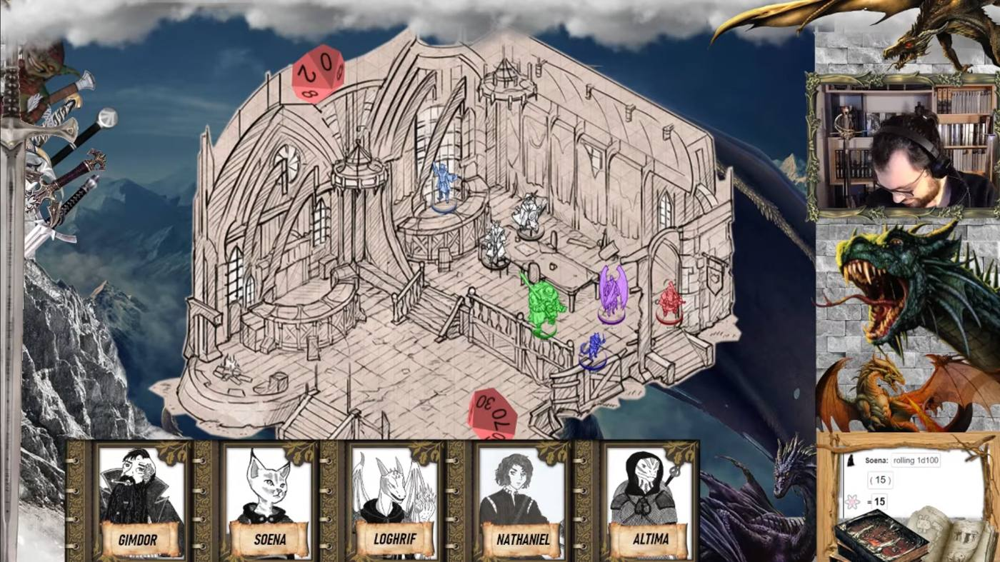
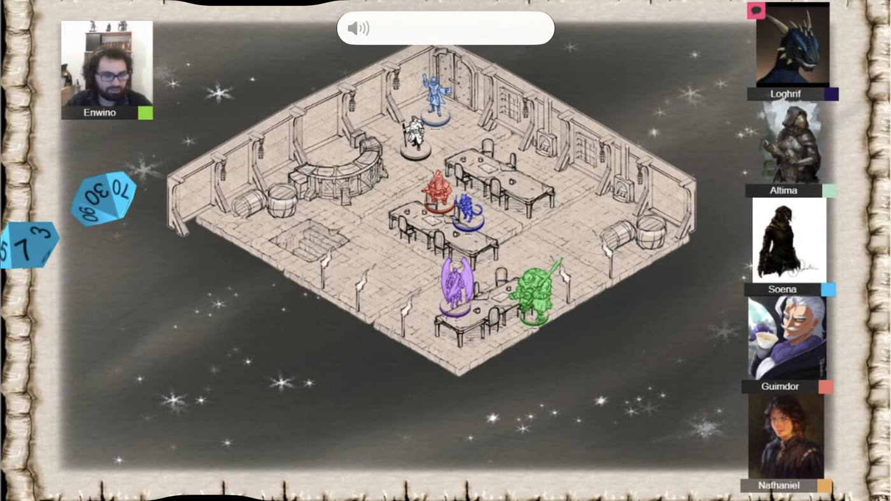
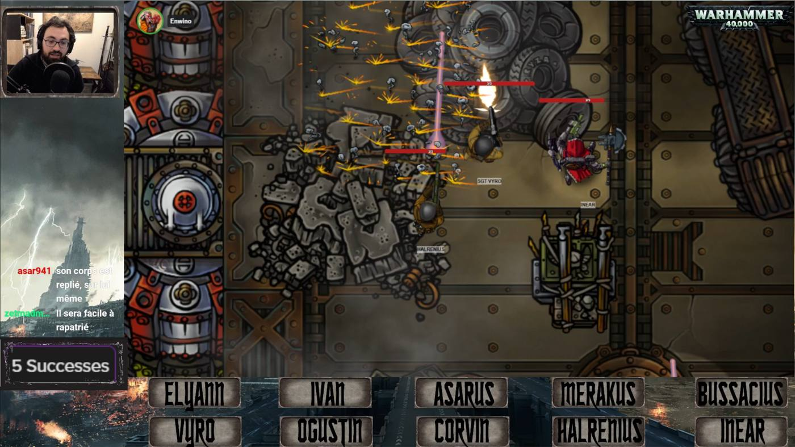
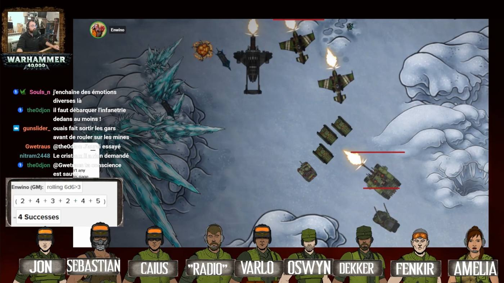
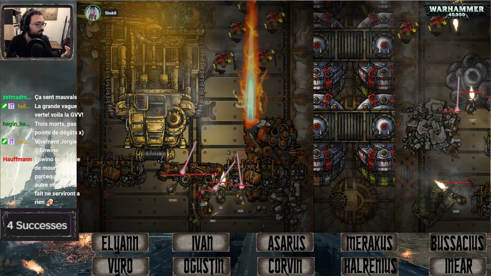

Un jeu de rôle où une IA tient le rôle du maître du jeu. Rien n'est décidé : chacun coche ses réponses, on compare, on en parle.
L'IA raconte l'histoire, joue les personnages et surtout met en scène : elle choisit quand montrer la carte du monde, l'image du lieu ou le plan de combat, pour mettre les meilleures scènes aux bons endroits.
Où est le groupe. On voyage de lieu en lieu par des routes : « Port-Brume → Valcendre, 2 jours à pied ».
La ville, l'auberge, la forêt. Pour l'ambiance, pendant le récit.
Le plan de l'auberge avec une grille et des jetons pour chaque héros et adversaire.
Le principe clé : le jeu applique les règles (dés, déplacements, points de vie), l'IA raconte. Elle ne peut ni tricher ni oublier une règle.
Règles : D&D 5e allégée, à partir des règles libres (SRD 5.1 et 5.2, licence CC-BY 4.0, réutilisables en citant la source). Les livres complets servent de référence ; on n'en copie pas le texte.
aiga_ (jeu de rôle IA en ligne) : la mémoire de chaque personnage, les traits gagnés en jouant, le carnet de partie, 3 choix proposés plus le texte libre.
Ni Warhammer ni D&D dans le nom ou l'univers : ce sont des marques. On crée notre monde.
Des MJ qui jouent en ligne avec un plan, des jetons, des portraits et des dés à l'écran.





Coche une réponse par question. L'étiquette Conseil de Claude indique une recommandation, pas une décision. Tes réponses s'enregistrent toutes seules ; celles des autres apparaissent sous chaque question.
Chargement des questions…
Les réponses de chacun côte à côte. En vert : vous êtes d'accord.
| Aucune réponse pour l'instant. |
Si l'enregistrement ne marche pas chez toi, copie ce texte et envoie-le à Wesley (WhatsApp, mail…).